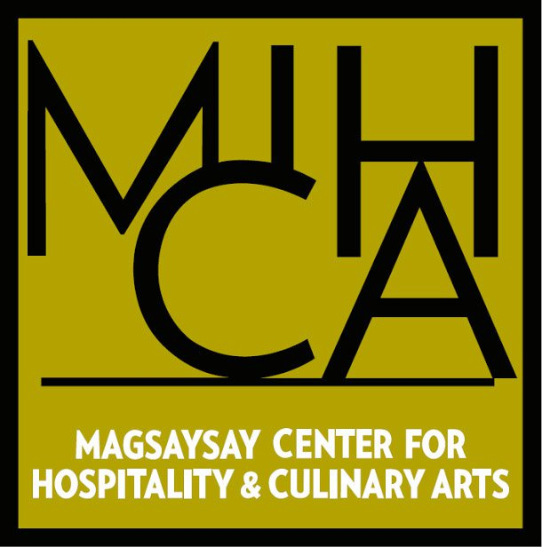
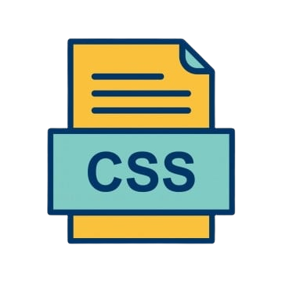

Hi! I'm Kristoffer James Bomediano and I worked as a Demi Chef De Partie at Costa Cruises
I enjoy playing games and watching movies or shows during my spare time.
KodeGo Ph
2023 - 2023
Magsaysay Center for Hospitality and Culinary Arts
2015 - 2016

Mapua Institute of Technology
2011 - 2015

Don Bosco Technical Institute
2007 - 2011
Demi Chef De Partie
March 2018 - March 2023
Preparation and cooking of food. Assisting in all areas of the kitchen for breakfast, lunch and dinner. Ensuring the kitchen areas are clean and tidy.
Commis Chef
February 2017 - October 2017
Supports the chef de partie in the kitchen. Performs cooking, cleaning, and other support duties as instructed by the chef de partie. Helps ensure that the kitchen's operations run smoothly.

HTML has been great so far. I am enjoying using HTML to practice my web development skills.
I am excited to learn more about CSS in the coming days.

I am a bit nervous about javascript, but I am excited to learn more about Javascript.